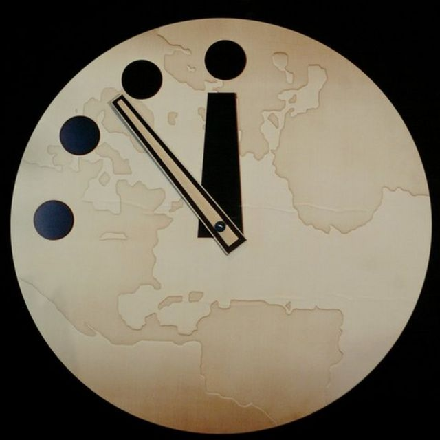

Universidad de la Sabana
Universidad de la Sabana
En 1945 tras la segunda guerra mundial, un grupo de científicos decidió crear un reloj del juicio final, este dando a entender que cada vez que ocurre un desastre natural o causado por los mismos humanos, se va a acelerar, esto con ayuda de Albert Einstein, ya que en la segunda guerra mundial se lanzaron varios ataques nucleares, por lo tanto, decidieron averiguar un tiempo aproximado de cuanto le podría quedar a la tierra con base a algunos eventos catastróficos.

Sabemos que el mundo ha pasado por algunos desastres que han hecho que el reloj vaya disminuyendo cada vez más, y es que para ver algunos de estos eventos, no nos tenemos que ir tan lejos, unos hechos recientes han causado que este reloj cada vez mas tenga menos tiempo, como ya se lo imaginaran uno de estos eventos es la pandemia reciente por el COVID-19, en el 2020 comenzó una pandemia que acabo con la vida de varias personas alrededor del mundo, dejándonos encarrerados en las casas por casi un año completo, hasta que a mediados de 2021 se descubrió la primera cura contra este virus, el caso es que solo con este evento que acabo con mas de 6 millones de personas, ocasionando que el reloj del apocalipsis llegara a bajar hasta unos 100 segundos, sin embargo no se asusten, no son 100 segundos reales, son 100 segundos en el reloj del apocalipsis, lo que equivale muchísimo mas en tiempo real, en conclusión podemos decir que cualquier cosa que afecte directamente a los humanos afecta directamente al reloj del apocalipsis.
También sabemos que existe una tensión nuclear, actualmente entre varios países, pero entre los principales, estados unidos y rusia, en resumen de esta tensión, es que estos dos países han estado en esa tensión durante muchos años, últimamente se ha incrementado por la guerra que esta sufriendo rusia contra ucrania, ucrania al ser un país apoyado por estados unidos genera muchísima más tensión ya que rusia dice que si algún otro país que apoye a ucrania se llega a meter en esa guerra, rusia responderá inmediatamente con misiles nucleares, estados unidos no se quedara atrás y también enviaría misiles hacia rusia, por lo tanto esto generaría que prácticamente la vida en la tierra desaparecería completamente, así esta guerra es otro de los factores que afecta directamente al reloj del apocalipsis.
El cambia climático es otro factor, el cambio climático puede llegar a ser una de las cosas mas peligrosas para la vida en la tierra sin embargo parece que se hace poco para cambiar esto, aunque si existen varios tratados contra el cambio climático, pues no es suficiente ya que en vez de decrecer esta creciendo muy rápido, generalmente es causado por la contaminación que hay en la tierra gracias a los mismos humanos, ya sean fábricas, carros, basura que se descompone y genera gases tóxicos, extracción de gases y petróleo y todo eso que contamina muchísimo, a pesar de que como decía anteriormente existen tratados como que para 2030 ya no se fabriquen carros que funcionen a gasolina, pues a ser realistas esto ayudaría un poco pero no lo suficiente ya que tomaría muchísimo tiempo para que los carros a gasolina dejen de circular por las calles en todo el mundo, todos estos ejemplos no es mas que decir que la gente se puede morir por dos cosas, o por Cáncer, gracias a la contaminación en el aire o un poco mas a largo plazo gracias a que la tierra se va a acabar porque estos gases dañan la capa de ozono y etc.…, entonces simplemente es otro factor que afecta directamente al reloj.
Aunque no parezca algo increíblemente peligroso, si lo es, la desinformación en el mundo es mas peligrosa de lo que cualquiera se puede llegar a imaginar, ya que la falta de información hace la gente en pocas palabras “ignorante”, hace que las personas les importe poco y se limiten a creer todo lo que pueden llegar a ver en la televisión o en videos o noticas “superficiales”, ¿pero que puede llegar a generar esto?, bueno entre varias cosas, la falta de educación de como saber que es real y que no, es decir, aunque la persona se tome el tiempo de ver o leer algo, no se toma el tiempo de verificar si esto es real o no, entonces, ¿no debería existir educación o algunos “cursos” que nos ayuden a diferenciar esto?, pues la verdad es que si, aunque hoy en día Google o algunas aplicaciones famosas de redes sociales tienen la tecnología para ayudar a identificar si la fuente de información es confiable o no, y aun así abunda las noticias falsas, y lo que puede causar que la gente se crea algunas noticias falsas o que solo vean lo que les vende la televisión es que por ejemplo, la noticia que vez te dice que realmente no existe la contaminación y que es un invento de yo no sé qué y todo eso, entonces tu en tu ignorancia vas a creer eso y no le das importancia a la contaminación, o si la televisión de vende un nuevo celular cada año y simplemente votas el que tenías, pues por muy informado que estes acerca de la contaminación, indirectamente eres una de las causas principales.
Para saber si las personas conocen un poco del tema, se hizo una encuesta a 10 personas, no lo escogí con personas de la clase ya que ellos ya tienen alguna idea de que es eso, decidí hacerlo con otras personas para saber si realmente tienen algún conocimiento y si están bien informados acerca de esto, los resultados fueron los siguientes:
RESULTADOSComo se puede observar, algunas de las personas estaban mas decididas a ayudar a mejorar los temas que puse en la encuesta, especialmente la contaminación, las personas probablemente buscan ayudar, otras buscan dar y que den más información al respecto, por ejemplo en el caso de algunas personas que no tienen ni idea de que se trata esto, lo que quiere decir que la gran parte de las personas tienen alguna idea de lo que se puede llegar a tratar, muy pocas no saben que es eso, y la otra parte saben que es pero en una parte no están muy bien informados y otra si conocen muy bien del tema, por lo que se puede decir que este es un tema que requiere más atención, deberían salir mas noticias, cosas que incentiven a la gente a averiguar de que se trata esto, ya que da la misma tener un reloj apocalíptico si casi nadie se entera de lo que se trata ni para que sirve, en conclusión es un tema que requiere más atención y de que se necesita que la información de este se reparta muchísimo mas para que se puede llegar a informar a muchísimas mas personas.
Bulletin of the Atomic Scientists. (S.F). https://www.youtube.com/watch?v=RJsvR_gSEjg.